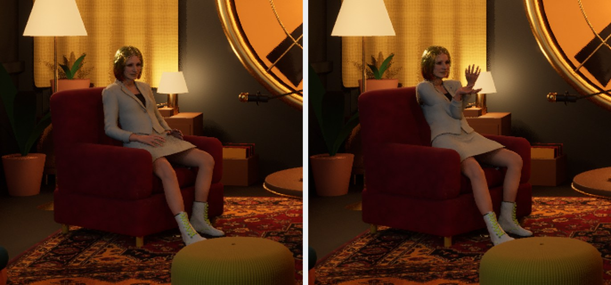

Grunden är mätt och ligger orörd i Sequencer. Allt du vill ändra gör du i lager ovanpå, med MetaHumans Control Rig och pickern i MetaHuman Animation Tool. Varje lager kan stängas av, viktas eller göras om, och när du är nöjd bakar Claude allt till ett klipp i banken.
Sidan beskriver sekvensen LS_Paket_Test som den ser ut i dag, men arbetssättet är detsamma för varje ny grund. Hur grunden kommer till står på kontaktmotorsidan.

Så här ligger spåren på Lisas Body i LS_Paket_Test. Det som ligger högre upp i listan nedan påverkar det som ligger under: riggen ändrar resultatet av båda animationsraderna.
MetaHumans egen kroppsrigg ligger som lager ovanpå animationen. Här gör du alla ändringar, ett lager per sak.
162 kontroller. Armar och ben står i FK, så en tom rigg återger grunden inom 0,03 grader.Armarna från AIScen 2 som additivt klipp. Alla andra ben i kopian är frysta, så bara armarna påverkas.
Kan viktas, kortas och flyttas i tid. Rör inte grunden.Det färdiga klippet från kontaktmotorn. Sitsen bär, fötterna står, loopen är sluten.
Rörs aldrig. Behöver något i grunden ändras är det ett nytt varv i kedjan, inte ett lager.Edit → Plugins, sök CommonUI, bocka i och starta om Unreal.
Verktygets två knappar anropar en funktion som bor i det pluginet. Utan det kompilerar de inte, och pickern fungerar inte. Du får också en varningsruta varje gång något spelas i editorn.
Dubbelklicka LS_Paket_Test i /Game/Podcast/Library/Paket/. Verktyget ligger i /Game/Locodrome/MAT/Locodrome_MAT: högerklicka och välj Run Editor Utility Widget. Det kan också Claude öppna åt dig.
Markera Control Rig-spåret i Sequencer och klicka på en kontroll i vyn. Editorn byter då till Animation Mode, och i panelen till vänster finns fliken Anim Layers.
Samma gång varje gång, oavsett om det är en hand, ett huvud eller en fot.
I Anim Layers: lägg till ett lager, välj Additive och döp det efter vad det fixar, till exempel "Vänster hand" eller "Huvud bild 100–160".
Riggens egen grundsektion låter du vara tom. Då är det alltid lagren som bär ändringarna, och varje lager går att stänga av för sig.
Välj Lisa i verktygets karaktärsväljare och klicka på kroppsdelen i figuren. Dra en ram för flera. Spegla urvalet när samma sak ska göras på andra sidan.
Armar och ben står i FK. En vridning i FK följer rörelsen som redan finns under, vilket är vad du vill för små rättningar. Byt till IK bara när en hand ska ligga på en exakt plats, som ett armstöd, och byt tillbaka efteråt.
Byt på en bild där handen är stilla, och titta att posen inte hoppar när du växlar. Hoppar den, ångra och välj en annan bild.
Ställ tidslinjen på bilden, vrid eller flytta kontrollen och tryck S. Hoppa några bilder, justera, nyckla igen. Två nycklar runt en ändring, med en orörd nyckel före och efter, gör att ändringen tonar in och ut i stället för att hålla i sig till slutet.
Står du mellan två nycklar drar du verktygets tween-reglage för att blanda mot den ena eller andra. Pose-urklippet kopierar en pose från en bild till en annan.
Stäng av lagret i Anim Layers och sätt på det igen. Skillnaden är exakt det du har gjort. Känns det för mycket, dra ner lagrets vikt i stället för att göra om.
Säg "kolla bild 140", så läser sensorn kontakten mot möblerna på den bilden, eller "skanna", så går den igenom hela klippet på 20 sekunder.
Säg "baka LS_Paket_Test till banken". Grund, armlager och dina lager blir ett nytt klipp som kan läggas i vilken sekvens som helst. Sekvensen finns kvar, så du kan alltid gå tillbaka och ändra.
Armarna från det andra klippet ligger som en vanlig sektion. Det du vill göra med dem gör du på sektionen.
| Del | Gör |
|---|---|
| Picker, kropp | Klicka på en kroppsdel för att markera dess kontroller. Dra en ram för flera. "All" tar alla. |
| Picker, ansikte | Samma för ansiktets kontroller. Ansiktet är nästa fokus, inte nu. |
| Mirror | Speglar urvalet till andra sidan. |
| FK / IK | Växlar en kroppsdel mellan FK och IK. Armar och ben ska stå i FK som utgångsläge. |
| Tween | Blandar den markerade kontrollen mot nästa eller föregående nyckel. |
| Pose | Kopierar och klistrar läge, rotation och skala mellan bilder. |
| Snap | Snäpper en kontroll till en socket, till exempel på fåtöljen. |
| Reset | Nollställer de markerade kontrollerna i lagret, så grunden syns igen. |
AS_Body_…. Välj "Don't Save" om Unreal frågar.